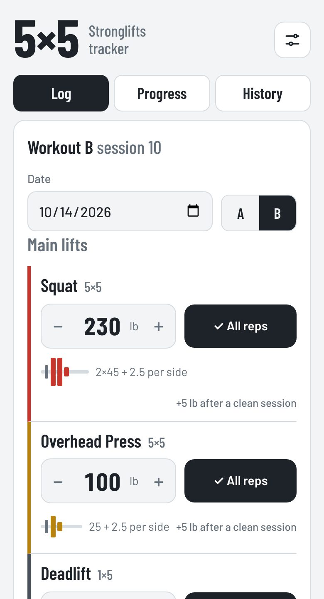

Built with AI · Fitness
5×5 Workout Tracker
A small app for following the StrongLifts 5×5 program. Log a session and it works out next time's weights for you: add weight after a clean workout, repeat after missed reps, and drop about 10% after three misses in a row.
- Plate math for every lift, so you know what to load on each side of the bar
- Progress charts for each lift, plus body weight and how you felt
- Full history with edit and delete
Loaded with sample workouts so you can see how it works. Anything you log saves in your browser only.
